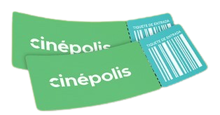

Salir
"Nunca dejes de aprender, cada capacitación te acerca más a tus metas."
Inicio
Promociones
Trailers(Próximante)
Procesos de Taquilla.

Taquilla
Taquilla Teorica.
Tecnica de venta
POS Marcaje Con Tecnica Venta Taquilla.